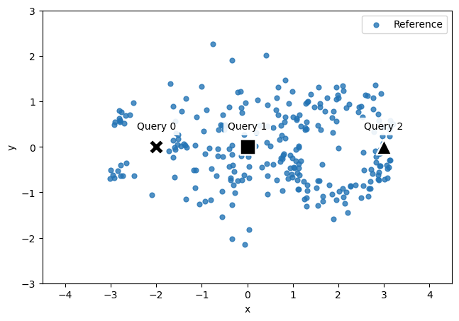
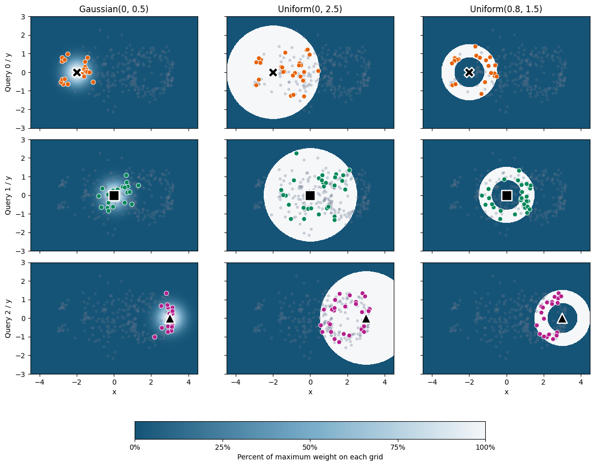
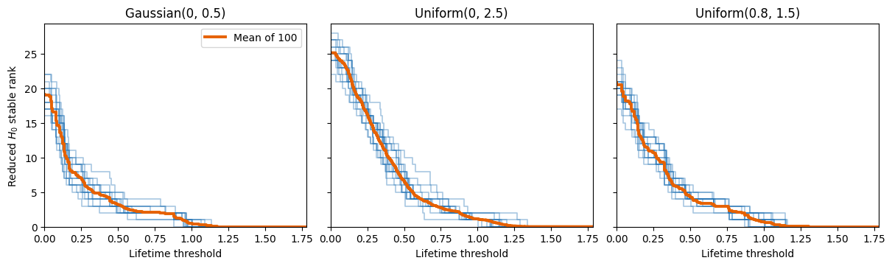
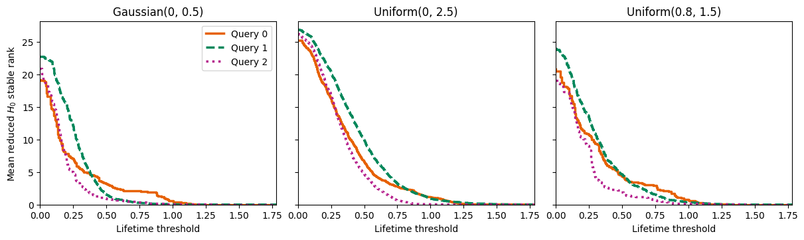
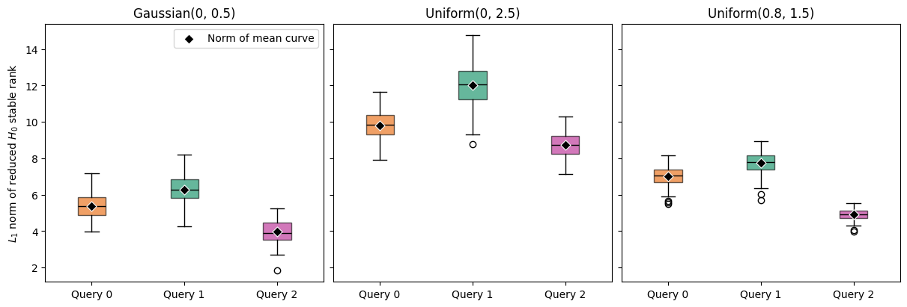
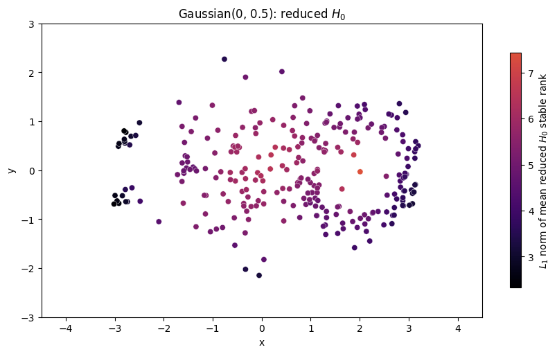
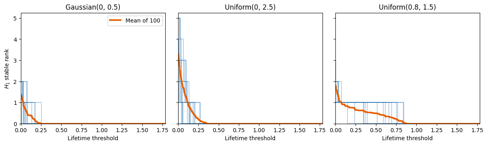
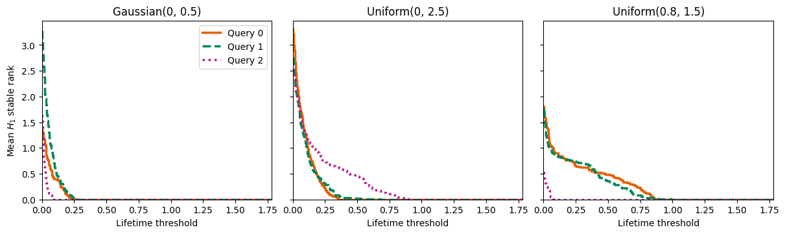
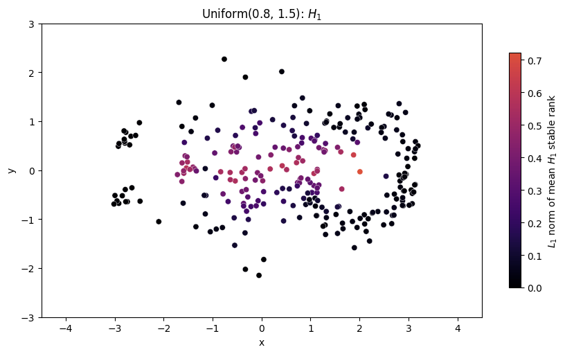

Choosing local summaries with relative subsampling#
We compare three sampling distributions at three query points to find summaries of local clustering (\(H_0\)) and loops (\(H_1\)). We then color every reference point by the \(L_1\) norm of its mean stable rank to see whether these summaries distinguish neighborhoods in the data.
[1]:
import numpy as np
import matplotlib.pyplot as plt
from matplotlib.colors import LinearSegmentedColormap
import stablebear as sb
from stablebear.plotting import plot, plot_distance_weight_heatmap
Selecting reference and query points#
We start with a point cloud and three queries representing different local structures.
[2]:
np.random.seed(5)
group_centers = np.array([[-2.0, 0.0], [0.0, 0.0], [2.0, 0.0]])
queries = np.array([[-2.0, 0.0], [0.0, 0.0], [3.0, 0.0]])
blob_left = np.vstack([
0.13 * np.random.randn(10, 2) + [-0.8, -0.6],
0.13 * np.random.randn(10, 2) + [-0.8, 0.6],
0.13 * np.random.randn(10, 2) + [0.45, 0.0],
]) + group_centers[0]
blob_middle = 0.9 * np.random.randn(120, 2) + group_centers[1]
# Normalize random directions, then add noise around radius 1.1.
ring = np.random.randn(120, 2)
ring = 1.1 * ring / np.linalg.norm(ring, axis=1, keepdims=True)
ring += 0.22 * np.random.randn(120, 2) + group_centers[2]
reference = sb.PointCloud(np.vstack([blob_left, blob_middle, ring]))
query_colors = ["#e66101", "#00875a", "#b51f8c"]
query_linestyles = ["-", "--", ":"]
query_markers = ["X", "s", "^"]
points = np.asarray(reference)
extent = (-4.5, 4.5, -3.0, 3.0)
fig, ax = plt.subplots(figsize=(12, 5))
ax.scatter(*points.T, s=24, color="#2474b5", alpha=0.8, label="Reference")
for i, query in enumerate(queries):
ax.scatter(*query, marker=query_markers[i], s=240, color="black",
edgecolors="white", linewidths=1.8, zorder=5)
ax.annotate(
f"Query {i}", query, xytext=(0, 18), textcoords="offset points",
ha="center", color="black", zorder=6,
bbox={"facecolor": "white", "edgecolor": "none", "alpha": 0.9},
)
ax.set(
xlim=extent[:2], ylim=extent[2:], xlabel="x", ylabel="y", aspect="equal",
)
ax.legend()
plt.show()

The point cloud has three overlapping groups: sparse clumps on the left, a Gaussian blob in the middle, and a noisy ring on the right. Queries 0, 1, and 2 lie near the clumps, in the blob, and near the ring’s right edge, respectively. These locations help us compare candidate distributions before choosing which to apply across the full point cloud. Queries need not be reference points.
Comparing sampling distributions#
For each query and distribution, we generate 100 bootstrap samples using 30 independent draws with replacement. We then remove repeated points with discard_duplicates=True, without drawing replacements.
Removing duplicates preserves positive-length persistence bars. Stablebear omits zero-length bars, so this leaves the returned barcodes and their stable-rank \(L_1\) norms unchanged. Each sample may contain fewer than 30 distinct points.
[3]:
distributions = [
sb.distributions.Gaussian(0, 0.5),
sb.distributions.Uniform(0, 2.5),
sb.distributions.Uniform(0.8, 1.5),
]
labels = [
"Gaussian(0, 0.5)", "Uniform(0, 2.5)",
"Uniform(0.8, 1.5)",
]
samples = sb.random.subsample_relative(
reference, query=queries, n_points=30, n_samples=100,
replace=True, discard_duplicates=True,
distribution=distributions, generator=sb.random.Generator(seed=5),
)
assert samples.shape == (3, 3, 100) # query, distribution, sample
[4]:
weight_cmap = LinearSegmentedColormap.from_list(
"distance_weight", ["#155477", "#78acc9", "#f5f7f9"]
)
fig, axes = plt.subplots(
3, 3, figsize=(12, 9), sharex=True, sharey=True, layout="constrained",
)
for d, distribution in enumerate(distributions):
for q, (query, color) in enumerate(zip(queries, query_colors)):
ax = axes[q, d]
heatmap = plot_distance_weight_heatmap(
distribution, query=query, extent=extent, ax=ax, cmap=weight_cmap,
vmin=0, vmax=100,
)
weights = heatmap.get_array()
peak = weights.max()
if peak > 0:
heatmap.set_data(100 * weights / peak)
ax.scatter(*points.T, s=10, color="#64748b", alpha=0.25)
selected = np.asarray(samples[q, d, 0])
ax.scatter(
*selected.T, s=42, color=color, edgecolors="white",
linewidths=0.7,
)
ax.scatter(*query, marker=query_markers[q], s=200, color="black",
edgecolors="white", linewidths=1.8, zorder=5)
ax.set(xlim=extent[:2], ylim=extent[2:])
if q == 0:
ax.set_title(labels[d])
if d == 0:
ax.set_ylabel(f"Query {q} / y")
if q == 2:
ax.set_xlabel("x")
fig.colorbar(
heatmap, ax=axes, orientation="horizontal",
label="Percent of maximum weight on each grid", ticks=[0, 25, 50, 75, 100],
format="%g%%", shrink=0.6, pad=0.06,
)
plt.show()

Each panel shows one sample: gray points are the reference, colored points are selected, and black markers identify queries 0 (X), 1 (square), and 2 (triangle). Lighter shading indicates larger weights, shown as a percentage of the maximum on each panel’s grid. The shared percentage scale does not imply equal absolute weights.
The Gaussian emphasizes points close to the query; the wider Uniform covers a larger neighborhood; the annular Uniform excludes the center. These choices let us compare different local arrangements.
Computing stable ranks#
Compute \(H_0\) and \(H_1\) for each sample and convert the barcodes to stable ranks. The sample axis is 2; the last axis indexes homology dimension.
reduced=True removes the essential \(H_0\) component so the curves have finite norms. \(H_1\) is unchanged.
[5]:
barcodes = sb.persistence.compute_persistent_homology(
samples, max_dim=1, reduced=True,
)
ranks = sb.persistence.barcode_to_stable_rank(barcodes)
assert ranks.shape == (3, 3, 100, 2)
print(
"Stable-rank axes: query, distribution, sample, homology:",
tuple(ranks.shape),
)
relative_ranks = sb.mean(ranks, dim=2)
assert relative_ranks.shape == (3, 3, 2)
print(
"Mean axes: query, distribution, homology:", tuple(relative_ranks.shape),
)
Stable-rank axes: query, distribution, sample, homology: (3, 3, 100, 2)
Mean axes: query, distribution, homology: (3, 3, 2)
[6]:
max_time = max(1.0, np.asarray(sb.max_time(ranks)).max())
mean_norms = np.asarray(sb.lp_norm(relative_ranks, p=1))
assert mean_norms.shape == (3, 3, 2)
# Keep the point colors dark enough to read on a white background.
norm_cmap = LinearSegmentedColormap.from_list(
"norm", plt.get_cmap("inferno")(np.linspace(0, 0.6, 256)),
)
Examining local connectivity with \(H_0\)#
Start with individual \(H_0\) curves and their averages at query 0.
[7]:
fig, axes = plt.subplots(
1, 3, figsize=(12, 3.5), sharex=True, sharey=True, layout="constrained",
)
for d, ax in enumerate(axes):
plot(
ranks[0, d, :15, 0], ax=ax, max_time=max_time, color="#2474b5",
alpha=0.4, linewidth=1.2,
)
plot(
relative_ranks[0, d, 0], ax=ax, max_time=max_time,
color=query_colors[0], linewidth=2.8, label="Mean of 100",
)
ax.set(
title=labels[d], xlabel="Lifetime threshold", xlim=(0, max_time),
)
axes[0].set_ylim(bottom=0)
axes[0].set_ylabel("Reduced $H_0$ stable rank")
axes[0].legend()
plt.show()

Blue lines show 15 sample curves for query 0; orange shows the mean of all 100.
For \(k\) distinct sampled points, reduced \(H_0\) starts at \(k - 1\) and drops as components merge. Each finite \(H_0\) lifetime is the distance at which a component merges. Repeated draws can change the number of distinct points and thus the starting height.
Comparing \(H_0\) across queries#
[8]:
fig, axes = plt.subplots(
1, 3, figsize=(12, 3.5), sharex=True, sharey=True, layout="constrained",
)
for d, ax in enumerate(axes):
for q, color in enumerate(query_colors):
plot(
relative_ranks[q, d, 0], ax=ax, max_time=max_time, color=color,
linewidth=2.5, fmt=query_linestyles[q], label=f"Query {q}",
)
ax.set(
title=labels[d], xlabel="Lifetime threshold", xlim=(0, max_time),
)
axes[0].set_ylim(bottom=0)
axes[0].set_ylabel("Mean reduced $H_0$ stable rank")
axes[0].legend()
plt.show()

Queries 0, 1, and 2 use solid, dashed, and dotted lines. With Gaussian(0, 0.5):
Left clumps (orange): an early drop reflects connections within clumps, followed by a shoulder before connections across gaps.
Middle blob (green): components merge over a broader range of distances.
Ring edge (purple): short gaps let most components merge early.
To quantify how each query sits in the surrounding geometry, we summarize its mean curve with an \(L_1\) norm. This gives one value per query for coloring the point cloud.
Summarizing \(H_0\) with a norm#
For the nonnegative mean curve, \(\bar{r}_0\),
This is the average sum of finite \(H_0\) lifetimes, or local connectivity cost. The box plots below compare sample norms across queries.
[9]:
sample_h0_norms = np.asarray(sb.lp_norm(ranks[:, :, :, 0], p=1))
fig, axes = plt.subplots(
1, 3, figsize=(12, 4), sharey=True, layout="constrained",
)
for d, ax in enumerate(axes):
boxes = ax.boxplot(
sample_h0_norms[:, d, :].T, positions=[0, 1, 2],
patch_artist=True, medianprops={"color": "black"},
)
for box, color in zip(boxes["boxes"], query_colors):
box.set(facecolor=color, alpha=0.6)
ax.scatter(
[0, 1, 2], mean_norms[:, d, 0], marker="D", s=45,
color="black", edgecolors="white", linewidths=0.8,
zorder=3, label="Norm of mean curve",
)
ax.set_title(labels[d])
ax.set_xticks([0, 1, 2], ["Query 0", "Query 1", "Query 2"])
axes[0].set_ylabel("$L_1$ norm of reduced $H_0$ stable rank")
axes[0].legend()
plt.show()

The boxes show variation across 100 samples: the middle 50%, median, and whiskers extending to observations within 1.5 interquartile ranges. Outliers appear separately. Black diamonds mark the mean sample norm, also the norm of the mean curve because the curves are nonnegative.
The Gaussian separates the ring-edge query from the others; the wider Uniform also increases separation between the left and middle queries. Despite overlap between samples, these differences suggest that the norms can distinguish local structure. We next evaluate the Gaussian summary at every reference point.
Coloring points by Gaussian \(H_0\)#
Evaluate the Gaussian \(H_0\) summary at every reference point.
[10]:
h0_samples = sb.random.subsample_relative(
reference, query=reference, n_points=30, n_samples=100,
replace=True, discard_duplicates=True,
distribution=distributions[0], generator=sb.random.Generator(seed=6),
)
h0_barcodes = sb.persistence.compute_persistent_homology(
h0_samples, max_dim=0, reduced=True,
)
h0_ranks = sb.persistence.barcode_to_stable_rank(h0_barcodes)
# A single distribution gives axes (query, sample, homology).
h0_means = sb.mean(h0_ranks, dim=1)
h0_norms = np.asarray(sb.lp_norm(h0_means[:, 0], p=1))
assert h0_norms.shape == (len(points),)
assert np.isfinite(h0_norms).all()
fig, ax = plt.subplots(figsize=(9, 5), layout="constrained")
colored = ax.scatter(
*points.T, c=h0_norms, cmap=norm_cmap, s=35,
edgecolors="white", linewidths=0.3,
)
ax.set(title="Gaussian(0, 0.5): reduced $H_0$", xlabel="x", ylabel="y",
xlim=extent[:2], ylim=extent[2:], aspect="equal")
fig.colorbar(
colored, ax=ax, label="$L_1$ norm of mean reduced $H_0$ stable rank",
shrink=0.8,
)
plt.show()

Each point is colored by the \(L_1\) norm of its mean \(H_0\) curve under Gaussian(0, 0.5). Larger values mean a greater total distance needed to connect the sampled points, including gaps within and between clumps.
The number of distinct sampled points also matters: concentrated weights cause more repeated draws, leaving fewer components to connect.
Examining local loops with \(H_1\)#
Now examine individual \(H_1\) curves and their averages at query 0.
[11]:
fig, axes = plt.subplots(
1, 3, figsize=(12, 3.5), sharex=True, sharey=True, layout="constrained",
)
for d, ax in enumerate(axes):
plot(
ranks[0, d, :15, 1], ax=ax, max_time=max_time, color="#2474b5",
alpha=0.4, linewidth=1.2,
)
plot(
relative_ranks[0, d, 1], ax=ax, max_time=max_time,
color=query_colors[0], linewidth=2.8, label="Mean of 100",
)
ax.set(
title=labels[d], xlabel="Lifetime threshold", xlim=(0, max_time),
)
axes[0].set_ylim(bottom=0)
axes[0].set_ylabel("$H_1$ stable rank")
axes[0].legend()
plt.show()

Blue lines show 15 \(H_1\) curves for query 0; orange shows the mean of all 100.
\(H_1\) stable rank counts loops whose lifetimes exceed a threshold, not loops present at that distance scale. Curves extending farther right indicate longer-lived loops.
Comparing \(H_1\) across queries#
[12]:
fig, axes = plt.subplots(
1, 3, figsize=(12, 3.5), sharex=True, sharey=True, layout="constrained",
)
for d, ax in enumerate(axes):
for q, color in enumerate(query_colors):
plot(
relative_ranks[q, d, 1], ax=ax, max_time=max_time, color=color,
linewidth=2.5, fmt=query_linestyles[q], label=f"Query {q}",
)
ax.set(
title=labels[d], xlabel="Lifetime threshold", xlim=(0, max_time),
)
axes[0].set_ylim(bottom=0)
axes[0].set_ylabel("Mean $H_1$ stable rank")
axes[0].legend()
plt.show()

The line styles identify the same queries as before.
Small Gaussian: all three mean curves decay quickly.
Wide Uniform: the ring-edge query (query 2) has a longer-lived \(H_1\) signal.
Annulus: query 2 has little \(H_1\), while the other queries produce longer-lived loops.
We choose the annulus for this contrast: near the ring edge it selects fragments of the ring, while elsewhere selected points can surround the excluded center.
Summarizing \(H_1\) with a norm#
For the mean \(H_1\) curve, \(\bar{r}_1\),
This is the average total loop persistence, combining the number of loops and their lifetimes. It describes the sampled neighborhoods: an annular filter can create a hole by excluding central points.
[13]:
from IPython.display import Markdown, display
for d, label in enumerate(labels):
norms = np.round(mean_norms[:, d, 1], 3)
display(Markdown(
f"**{label}**: mean $H_1$ norms for queries 0, 1, 2: `{norms}`"
))
Gaussian(0, 0.5): mean \(H_1\) norms for queries 0, 1, 2: [0.107 0.196 0.037]
Uniform(0, 2.5): mean \(H_1\) norms for queries 0, 1, 2: [0.305 0.29 0.547]
Uniform(0.8, 1.5): mean \(H_1\) norms for queries 0, 1, 2: [0.483 0.431 0.015]
Coloring points by annular \(H_1\)#
Evaluate the annular \(H_1\) summary at every reference point.
[14]:
h1_samples = sb.random.subsample_relative(
reference, query=reference, n_points=30, n_samples=100,
replace=True, discard_duplicates=True,
distribution=distributions[2], generator=sb.random.Generator(seed=6),
)
h1_barcodes = sb.persistence.compute_persistent_homology(
h1_samples, max_dim=1, reduced=True,
)
h1_ranks = sb.persistence.barcode_to_stable_rank(h1_barcodes)
# A single distribution gives axes (query, sample, homology).
h1_means = sb.mean(h1_ranks, dim=1)
h1_norms = np.asarray(sb.lp_norm(h1_means[:, 1], p=1))
assert h1_norms.shape == (len(points),)
assert np.isfinite(h1_norms).all()
fig, ax = plt.subplots(figsize=(9, 5), layout="constrained")
colored = ax.scatter(
*points.T, c=h1_norms, cmap=norm_cmap, s=35,
edgecolors="white", linewidths=0.3,
)
ax.set(title="Uniform(0.8, 1.5): $H_1$", xlabel="x", ylabel="y",
xlim=extent[:2], ylim=extent[2:], aspect="equal")
fig.colorbar(
colored, ax=ax, label="$L_1$ norm of mean $H_1$ stable rank", shrink=0.8,
)
plt.show()

With Uniform(0.8, 1.5), points near the ring’s right edge have low total loop persistence, while many points nearer the middle have higher values. An annulus can select disconnected ring fragments or surround an empty center, depending on its location.
Noise and overlap make the contrast gradual. \(H_0\) and \(H_1\) use separate color scales because their norms have different ranges.